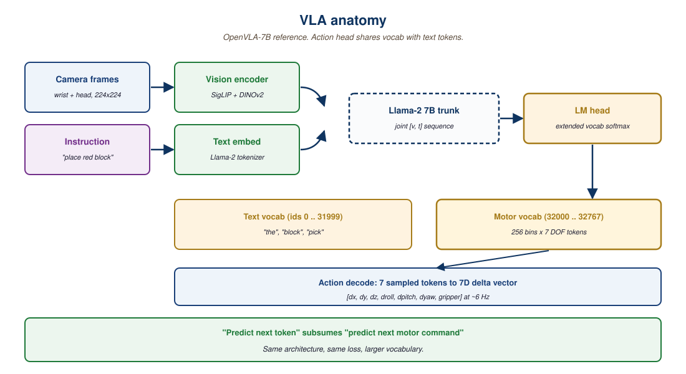

Embodied multimodal agents are the meeting point of LLM reasoning and physical grounding: a vision-language-action loop that turns a perception stream into a sequence of motor actions. This section covers the architectures that make that loop work.
A Vision-Language-Action model is the simplest possible answer to "what does a robot brain look like in 2026?": take a multimodal LLM, extend its vocabulary with motor-command tokens, and finetune on demonstration trajectories. The architecture has three parts stacked end to end. A vision encoder (typically SigLIP or DINOv2) consumes wrist-camera and head-camera frames into a token sequence. A language model (Llama, Gemma, or a custom backbone of 3B to 7B parameters) attends jointly over those visual tokens and the natural-language instruction. An action decoder, often just the LM head reading from a dedicated subset of vocabulary, produces a sequence of discrete tokens that decode back into joint angles, gripper signals, or end-effector deltas.
The conceptual move is what makes the field tractable. Before VLAs, robotics built bespoke policies per task and per platform. After VLAs, a robot policy is structurally identical to a chat model: you tokenize, you predict the next token, you decode. This section walks through that architecture, surveys the 2024-2026 models that proved it works, and explains why "VLA = LLM where motor commands are extra tokens in the vocabulary" is not a metaphor but a literal description of the implementation.

41.1.1 The architecture in one diagram (and one equation)
A VLA forward pass is structurally a multimodal LLM forward pass with one extra step at the output. The model sees a sequence [v_1, ..., v_K, t_1, ..., t_L] where the v_i are image patch tokens and the t_j are text tokens from the instruction. It autoregressively emits [a_1, ..., a_H], where each a_i is an action token drawn from a discretized vocabulary that covers the robot's degrees of freedom. The same softmax that picks "Paris" given "The capital of France is" picks "joint-5 +0.03 rad" given "pick up the red block, image: [pixels]". For more on how the LM head turns hidden states into a categorical distribution over a vocabulary, see Section 4.4 (the LM head); the math is identical, only the vocabulary is reinterpreted.
Discretize each robot degree of freedom into ~256 bins; reserve a contiguous slice of the LLM vocabulary (say, indices 32000 to 32767) for those bins; finetune the model so that emitting the right token sequence executes the right movement. Every architectural choice you already understand from chat models (KV cache, FlashAttention, RoPE scaling, speculative decoding) transfers to robotics with zero modification. This is why a robotics team in 2026 hires the same engineers an LLM team does.
"Discretize each DOF into 256 bins and reserve a vocabulary slice" is BPE tokenization from Section 2.1, generalized from text to a continuous motor signal. BPE made variable-length strings tractable for a softmax over a finite vocabulary; action quantization does the same for continuous motor commands. RT-2 (Brohan et al., 2023, arXiv:2307.15818) is the canonical demonstration that this is not a metaphor: their tokenizer is the existing text BPE with a contiguous index range repurposed for actions.
The closed loop in Figure 41.1.1 (observation, instruction, action, new observation) is the ReAct / function-calling agent loop from Section 27.1 and the agent architecture from Section 26.1. The only difference is that the tool inventory has one entry, "send these motor tokens to the robot", and that tool acts on the physical world instead of a software API. The control flow, the prompt envelope, and the streaming-token-then-execute pattern are the same.
41.1.2 OpenVLA-7B: the open-weights reference implementation
OpenVLA-7B (Stanford and Toyota Research Institute, 2024) is the first open-weights generalist VLA and remains the easiest entry point. It uses a fused SigLIP+DINOv2 vision encoder, a Llama-2 7B backbone, and a 7-dimensional end-effector action space discretized into 256 bins per dimension. Training data: the Open X-Embodiment mixture of 970k demonstrations across 22 robots. Inference cost: about 6 Hz on an A100, which is fast enough for manipulation but not for high-frequency control. The minimal call signature reads almost exactly like a chat completion:
from openvla import OpenVLA
model = OpenVLA.from_pretrained("openvla/openvla-7b")
image = camera.get_frame() # PIL.Image from wrist camera
instruction = "place the red block on the plate"
action = model.predict_action(image, instruction)
# action: np.array of shape (7,), i.e. [dx, dy, dz, droll, dpitch, dyaw, gripper]
robot.step(action)That is the entire interface. Closed-loop control is a Python while True: loop around those four lines. Everything you learned about prompting, sampling temperature, and KV caching applies directly. The HuggingFace checkpoints are downloadable without a license gate, which is the principal reason OpenVLA has become the teaching example for university courses.
41.1.3 Physical Intelligence pi-0 and pi-0.5: the generalist push
Physical Intelligence's pi-0 (October 2024) and its successor pi-0.5 (October 2025) raised the ceiling on what a single VLA can do. The technical changes over OpenVLA are two: a flow-matching action head replaces the discrete-token decoder, which lets the model emit smooth continuous trajectories at high frequency (up to 50 Hz); and the training mixture spans an order of magnitude more demonstrations across five embodiments (two single-arm robots, two bimanual platforms, and a mobile manipulator). The headline pi-0.5 result is cross-embodiment transfer: a single set of weights drives all five robot platforms, and zero-shot transfer to a sixth platform recovers about 70% of fine-tuned performance after seeing only the URDF and a handful of teleoperated demos.
Why this matters: in 2023 a "VLA model" was usually a custom-trained policy for one platform and one task family. In 2026 a VLA model is a foundation model in the same sense as a base LLM: you download weights, you finetune on your platform, you ship. The cost of bringing up a new robot collapsed roughly 100x in two years.
41.1.4 RT-2-X and the data-scaling story
RT-2-X (Google DeepMind, 2024) is the precursor that established the scaling claim: train one VLA on demonstrations pooled from many labs and platforms, and emergent generalization improves with mixture size. The Open X-Embodiment dataset that RT-2-X consumed is the robotics analog of Common Crawl: messy, multi-source, and the substrate everything else stands on. The original closed-weights RT-2-X has been largely superseded by OpenVLA and pi-0 for practical work, but its data contribution remains foundational.
"Train on 22 robots, generalize to a 23rd" is the same transfer-learning story as multilingual LMs trained on dozens of languages that then handle a new low-resource language with minimal data (see the data-curation discussion in Section 7.4 and the modern multilingual landscape in Section 8.1). The Open X-Embodiment mixture plays the role that mC4 plays for multilingual T5. The mechanism is the same: shared representation space, diverse training corpus, emergent transfer.
OpenVLA's LoRA fine-tune on a new robot is the supervised fine-tuning recipe from Section 18.1 with parameter-efficient adapters from Section 19.1. Demonstration-to-token pairs play the role of instruction-response pairs; the loss is the same masked cross-entropy. If you have fine-tuned a chat model on a domain corpus, you have done a VLA fine-tune; only the data collection (teleoperated trajectories) differs.
RT-2 famously interleaves natural-language reasoning tokens and action tokens in the same output stream. "Pick up the red block" decodes as something like "the red block is on the left; my gripper is open; move arm left; close gripper; lift", with motor tokens embedded between reasoning steps. That is chain-of-thought from Section 14.2 and the reasoning-model scratchpad from Section 9.2, with the final answer being a sequence of motor commands instead of a number. The Inner Monologue paper (Huang et al., 2022, arXiv:2207.05608) makes this bridge explicit.
The 2026 playbook for shipping a VLA on a new robot: (1) start from OpenVLA-7B or pi-0.5 weights; (2) collect 500 to 5000 teleoperated demonstrations on your platform with LeRobot or DynaLabs; (3) LoRA-finetune for 8 to 24 hours on a single A100; (4) deploy with a safety wrapper that vetoes actions outside a velocity envelope. The economic shape mirrors LLM finetuning exactly: 99% of the intelligence is in the pretrain, the last percent is yours.
41.1.5 Comparing the three reference models
| Model | Params | Action head | Embodiments | Weights | Best for |
|---|---|---|---|---|---|
| OpenVLA-7B | 7B | Discrete tokens, 256 bins | Single-arm dominant | Open (Apache 2.0) | Learning, university labs, single-arm pick-and-place |
| pi-0.5 | ~3B vision-LM + flow head | Continuous flow-matching | 5 platforms + zero-shot | Partial open (research) | Cross-embodiment, smooth high-frequency control |
| RT-2-X | 5B / 55B variants | Discrete tokens | 22 robots (training) | Closed | Reference for scaling experiments; weights not shippable |
The "tokens in, tokens out" framing of this section is the literal application of Section 4.4's LM head to motor control. The agent loop that wraps a VLA in a higher-level planner is the same loop introduced in Chapter 26 (Agents): perceive, plan, act, observe. Section 41.2 next examines the planner side of that loop in detail.
41.1.6 The honest limitations
VLAs are not solved. Three failure modes recur: (1) generalization gaps under distribution shift: changing lighting or adding a novel distractor object often drops success rate by 30 to 50 percentage points, even on pi-0.5; (2) long-horizon brittleness: success rates compound multiplicatively across subtasks, so a 90%-per-step policy is a 35%-after-ten-step policy; (3) data hunger: the most performant policies still need thousands of demonstrations per task family, and demonstration collection is expensive (teleoperators, time, instrumentation). The frontier work in 2026 is largely about closing those gaps with world-model rollouts (section 32.4), better visual representations, and reinforcement-learning fine-tunes on top of supervised VLA bases.
Section 41.2 turns from the action-emission layer to the planning layer: when the task is "tidy the kitchen" rather than "place the red block", who decides what the VLA should do next? The answer in 2026 is a second LLM, often a different one, acting as a dispatcher over a fleet of VLA primitives. That stack, with SayCan, Code as Policies, and VoxPoser as its lineage, is the subject of LLM-powered robotics, which is what we look at next.